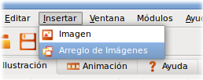

[ Under Translation ]
Stop Motion? es posible?
Como ya lo mencionamos en la introducción de este manual, Stop Motion es una técnica de animación basada en fotografías. Vale la pena decir que los vídeos resultantes de este tipo de animación suelen ser bastante divertidos. Muy bien, ahora la pregunta del millón: Puedo hacer Stop Motion con Tupí?
La respuesta corta es SI, sin embargo, el componente dedicado a este tema aún necesita de mucho trabajo. Por el momento, la interfaz permite la realización de ejercicios de animación sencillos, pero las metas a futuro son mucho más ambiciosas.
Por ahora, veamos como crear un pequeño vídeo usando esta técnica:
- Consigue una cámara fotográfica digital. Dado que este tipo de animaciones se basan en fotografías, la cámara es de vital importancia.
- Construye el guión de tu historia, siguiendo los consejos que mencionamos en el capítulo "Lo primero!"
- Consigue los recursos que necesitas para tu historia: objetos, personas, etc.
- Fija tu cámara en un punto fijo (ej. una mesa o un trípode) apuntando hacia el lugar donde vas a realizar tu escena y asegúrate de que la cámara no se pueda mover hacia los lados. Ubica tus recursos en la escena, tal y como quieres que se encuentren al comienzo de la animación.
- Comienza a tomar una foto por cada movimiento que realices sobre los objetos o personas que están en la escena, de acuerdo a lo definido en tu guión. Recuerda que cada movimiento debe ser pequeño, pues de esto depende que al final, tu animación luzca muy fluida.
- Cuando hayas capturado cada uno de los momentos de la historia que requieres para tus escenas, conecta tu cámara al computador y descarga todas las fotos en una carpeta.
- Abre Tupí y crea un nuevo proyecto.
- Ahora selecciona el menú Insertar ubicado en la parte de arriba y escoge la opción Arreglo de Imágenes. Un cuadro de diálogo se abrirá, solicitando que selecciones el directorio en donde guardaste las fotos para tu animación.

Fig #63. Opción de insertar un Arreglo de Imágenes
- Una vez presiones el botón Aceptar, el programa cargará cada una de tus imágenes en un marco independiente y siguiendo el orden alfabético en que se encuentren los archivos dentro del directorio.

Fig #64. Diálogo de selección del directorio que contiene las imágenes
- Si tus imágenes son muy grandes, el programa se verá forzado a redimensionarlas, pues si son muchas y todas son de un tamaño superior a 1 MB, es muy probable que tu máquina se quede sin memoria y el programa se bloquee.

Fig #65. Mensaje informativo al momento de insertar las imágenes
- Cuando termine el proceso de importación de imágenes, puedes darle un vistazo a tu proyecto en la pestaña de Animación (la segunda en el Área de Trabajo de izquierda a derecha).
- A partir de este punto, tienes dos opciones: puedes exportar tu proyecto como un archivo de vídeo, o puedes hacer algo de edición sobre las imágenes que desees utilizando las herramientas de ilustración.
- Si te gusta lo que viste y lo quieres convertir en vídeo, regresa a la pestaña de Animación y presiona el botón Exportar ubicado en el panel inferior.
- Sigue los pasos habituales de exportación, descritos en la sección anterior: "Creemos un archivo de vídeo" y ya está! Tu proyecto de Stop Motion es una realidad!